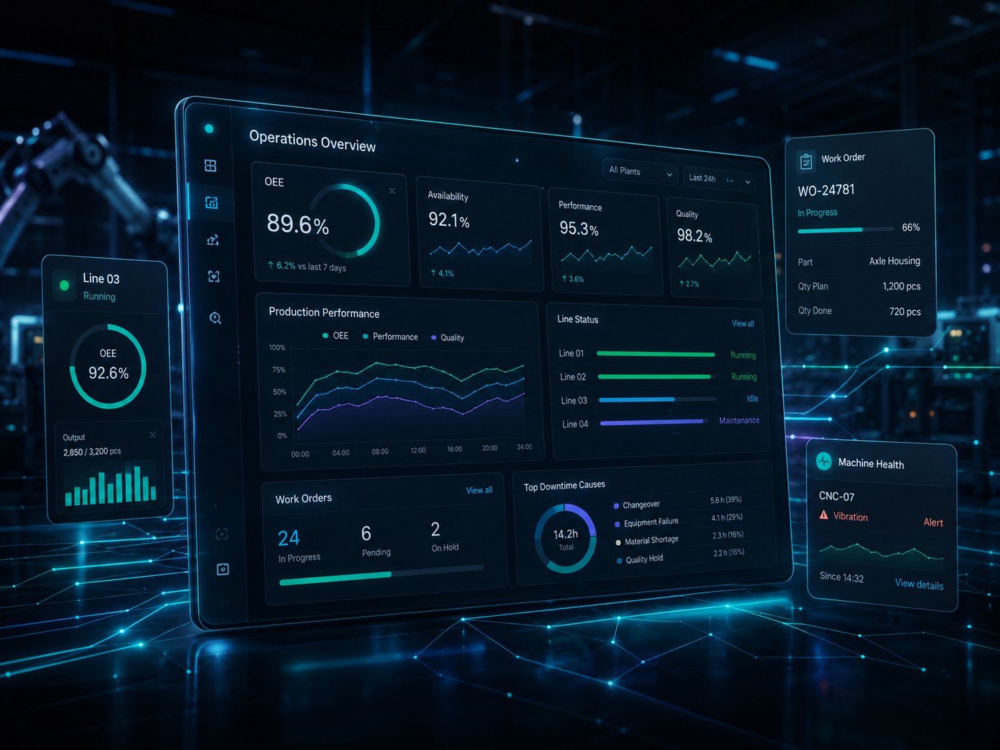

Digitalisierung · Smart Factory · Cloud
HI-Tech Solutions
Wir entwickeln pragmatische Digitalisierungslösungen für mittelständische Produktionsunternehmen — von der Engpassanalyse bis zum lauffähigen MVP in wenigen Wochen.

Der Ausgangspunkt
ERP, Excel, Maschine und Shopfloor laufen oft nebeneinander. Dadurch entstehen Entscheidungen auf Basis von Annahmen — statt auf Basis dessen, was gerade in der Produktion passiert.
Die Folge: Planung sieht nicht, was wirklich passiert. Maschinendaten liefern keine Entscheidungsgrundlage. Und das Digitalisierungsprojekt wird zu groß, zu abstrakt und zu langsam.
Den konkreten Engpass eingrenzen →Der Duo-Ansatz
Viele Digitalisierungsprojekte scheitern nicht an der Technik. Sie scheitern daran, dass Werkrealität und Softwarelogik nicht sauber übersetzt werden.
01 / Produktion
Wir verstehen Werkleitung, Planung, Arbeitsvorbereitung und Shopfloor. Engpässe, Schichtlogik, Rückmeldungen, Ressourcen, Prioritäten und ERP-Abhängigkeiten sind der Ausgangspunkt.
02 / Technik
Wir bauen robuste Datenmodelle, APIs, Dashboards, Cloud-Architekturen und Integrationen — so, dass ein MVP später nicht weggeworfen, sondern skaliert werden kann.
Keine PowerPoint-Digitalisierung. Sondern ein Werkzeug, das im Werk genutzt wird.
Anwendungsfälle
Wir starten dort, wo Transparenz, Steuerung oder Rückmeldung heute konkret Zeit und Wirkung kosten.
ERP-Daten, Excel-Planung and Shopfloor-Realität laufen auseinander. Wir schaffen ein Board für Aufträge, Ressourcen, Kapazitäten, Prioritäten und Status.
Planung → ShopfloorMaschinen liefern Daten, aber niemand sieht den echten Zustand nutzbar. Wir verbinden SPS, OPC UA, Edge und Cloud zu einem verständlichen Live-Bild.
SPS · OPC UA · EdgeProduktionsaufträge, Arbeitsgänge, Ressourcen und Rückmeldungen müssen sauber zwischen ERP und Shopfloor fließen. Wir bauen robuste Schnittstellen und Datenmodelle.
D365 · ERP · APIsStillstände, Zykluszeiten und Leistungsabweichungen werden zu spät erkannt. Wir schaffen OEE-Dashboards mit Ursachenlogik und konkreten Steuerungsimpulsen.
OEE · Stillstand · UrsacheEin MVP funktioniert in einem Werk. Danach braucht es Standards, Wiederverwendung und Betrieb. Wir denken Architektur, Support und Skalierung von Anfang an mit.
Klarer Einstieg
Für Unternehmen, die vor einer Entscheidung stehen und einen konkreten MVP-Scope brauchen.
Für Unternehmen, die ein greifbares Werkzeug für Planung, Shopfloor oder Maschine live bringen wollen.
Für Unternehmen, die erfolgreiche MVPs auf weitere Werke, Linien und Prozesse übertragen.
Architektur, die mitdenkt
Wir berücksichtigen Schnittstellen, Datenmodell, Betrieb und spätere Skalierung — bevor eine erste Ansicht gebaut wird.
Projektweg
Wir klären, wo Auftrag, Ressource, Maschine oder Rückmeldung heute Reibung erzeugen.
Wir schauen auf ERP, D365, Excel, Maschinen, Schnittstellen und die Datenqualität.
Wir legen fest, welches Ergebnis in kurzer Zeit für die Nutzer im Werk wirklich nutzbar ist.
Wir entwickeln, testen mit den späteren Nutzern und binden die relevanten Datenquellen an.
Wir standardisieren Bausteine, schaffen Transparenz im Betrieb und bereiten den Rollout vor.
Interaktiver Einstieg
In drei kurzen Fragen ordnen wir den Engpass ein und geben eine konkrete Empfehlung für den sinnvollsten Einstieg.
Was ist aktuell Ihr größtes Problem?
Konkreter nächster Schritt
Kein allgemeiner Digitalisierungsworkshop. Kein monatelanges Vorprojekt. Wir beginnen mit einem konkreten Engpass und prüfen, welches digitale Werkzeug kurzfristig den größten Nutzen bringt.
Typischer Einstieg